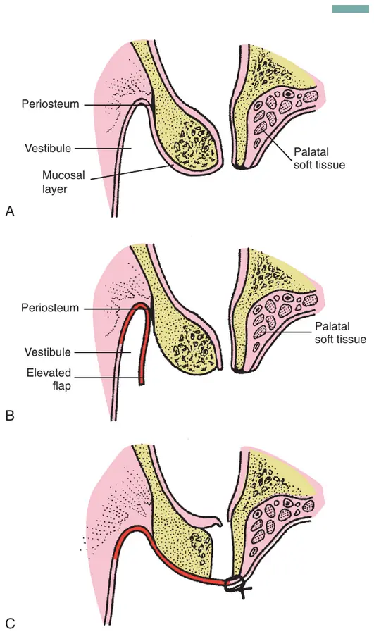

نسخه استخراجشده؛ ترجمه یا تأیید علمی انجام نشده است. وضعیت: captured
اکثریت ارتباطهای دهانی-سینوسی که با روشهای توصیهشده درمان میشوند، بدون حادثه التیام مییابند. ولی بیماران باید چند هفته با دقت پیگیری شوند تا مطمئن شوی التیام رخ داده است.

و یک نکتهی امیدبخش: حتی بیمارانی که ظرف چند روز با یک ارتباط کوچک برمیگردند، معمولاً خودبهخود التیام مییابند — به شرط اینکه سینوزیت ماگزیلا وجود نداشته باشد.
ولی یک مرز زمانی روشن هست: این بیماران باید از نزدیک پایش شوند و اگر ارتباط بیش از ۲ هفته دوام آورد، به جراح دهان و فک و صورت ارجاع شوند.
شکایت معمول بیمار در چنین وضعیتی، نشت مایعات از دهان به بینی است.
و چهار دلیل که بستن فیستول را ضروری میکنند: هوا، آب، غذا و باکتری از حفرهی دهان به سینوس میروند و معمولاً یک سینوزیت مزمن ایجاد میکنند. افزون بر این، اگر بیمار دنچر کامل ماگزیلا میبندد، سیل مکشی دنچر از بین میرود و گیر دنچر به خطر میافتد.
و نقش بیماری سینوسی زمینهای — یک هشدار مهم: توصیههای پیشگفته برای بیمارانی صادقاند که بیماری سینوسی از پیش موجود ندارند. اگر ارتباطی رخ دهد، مهم است که دندانپزشک بهطور مشخص دربارهی سابقهی سینوزیت و عفونتهای سینوسی بپرسد. چون اگر بیمار سابقهی بیماری مزمن سینوسی داشته باشد، حتی ارتباطهای دهانی-سینوسی کوچک هم ممکن است بد التیام یابند و به یک ارتباط مزمن و سرانجام فیستول بینجامند. بنابراین ایجاد یک ارتباط دهانی-سینوسی در بیماری با سینوزیت مزمن، علتی برای ارجاع به جراح دهان و فک و صورت برای مراقبت قطعی است.
درمان و بستن موفق فیستول دهانی-سینوسی، درمان پزشکی و جراحی گستردهتری میطلبد.
و اصل حاکم بر همهی این کار: پیش از بستن یک فیستول دهانی-سینوسی، ضروری است که هر عفونت حاد یا مزمن درون سینوس از بین برود.
و راههای رسیدن به آن:
و یک ارزیابی که فراموش میشود — دندانهای مجاور: دندانهای مجاور باید با دقت برای درگیری احتمالی ارزیابی شوند. اگر فیستول در مجاورت ریشهی یک دندان مجاور شکل گرفته باشد، بستن پیچیدهتر میشود؛ و برای موفق شدن، ممکن است برداشتن آن دندان لازم باشد.
و یک واقعیت آناتومیک که طرح جراحی را عوض میکند: صرفنظر از تکنیکی که به کار میرود، باید به یاد داشت که نقص استخوانی اطراف فیستول همیشه بهمراتب بزرگتر از تغییرشکل ظاهری بافت نرم است. طرحریزی جراحی تکنیک بستن باید بر همین اساس تنظیم شود.
و رویکرد مدرن مکمل: رویکردهای ترکیبی داخل دهانی و آندوسکوپیک ممکن است شانس موفقیت بلندمدت را بیشتر کنند. مدیریت موفق یک فیستول دهانی-سینوسی اغلب هم مدیریت فرایند عفونی درون سینوس و هم مدیریت خودِ ارتباط فیزیکی را میطلبد.
و جراحی آندوسکوپیک عملکردی سینوس یک رویکرد کمتهاجمی است که مدیریت ترانسنازال سینوزیت مزمن و بهینهسازی درناژ سینوس ماگزیلا را ممکن میکند — که ممکن است شامل جابهجا کردن شاخک میانی، آنسینکتومی کامل، و آنتروستومی ماگزیلا باشد.
روشهای بستن فیستول دهانی-سینوسی شامل سه رویکرد اصلیاند: پیشبرد فلپ باکال، پیشبرد فلپ پالاتال، و پیشبرد فلپهای پالاتال و فاسیال روی یک ممبران از مادهی آلوپلاستیک.
۱) فلپ باکال. این عمل به شیوهای مشابه پیشبرد باکالی که برای بستن فوری ارتباط توصیف شد انجام میشود.
ولی در فیستول مزمن یک تفاوت حیاتی هست: مجرای فیستول با اپیتلیوم پوشیده شده که باید اکسایز شود یا از دیوارههای استخوانی فیستول بلند شود، در صورت امکان به هم بخیه شود، و به داخل حفرهی سینوس برگردانده شود.
و ترتیب اهمیت دارد: این کار باید پیش از بلند کردن فلپ باکال انجام شود، تا اندازهی واقعی نقص استخوانی بازرسی شود و اندازهی فلپ بهدرستی طراحی شود — طوری که فلپ کل نقص را بپوشاند و حاشیههایش روی استخوان بنشینند. سپس فلپ بلند میشود، پریوست آزاد میشود، و فلپ روی نقص کشیده و با دقت بخیه میشود.
و یک تکنیک مشابه: یک فلپ باکال بزرگتر بلند میشود، ولی نقص مستقیماً با یک بخش پایهدار از پد چربی باکال پوشانده میشود، با بستن جزئی فلپ موکوپریوستیل.
سه اصل کلیدی پیشبرد فلپ برای بستن — که در هر دو حالت فوری و تأخیری صادقاند: بلند کردن یک فلپ با پایهی پهن و عرض کافی برای پوشاندن ارتباط، قرار دادن حاشیههای فلپ روی استخوان، نه مستقیماً روی نقص یا ناحیهی ارتباط، و فلپ باید کاملاً بدون کشش باشد؛ و برای رسیدن به این، پریوست معمولاً باید در ارتفاع دیسکسیون برش داده و آزاد شود.
۲) فلپ پالاتال چرخشی — دو مزیت و یک عیب.
و شرط اندازه: اندازهی فلپ باید اجازهی چرخش غیرفعال فلپ برای پوشاندن کل نقص را بدهد، با حاشیههایی که از مرزهای استخوانی نقص فراتر بروند. پس از اکسایز فیستول و بلند کردن و چرخاندن و بخیهی فلپ، نقص پالاتال سرانجام با گرانولاسیون و اپیتلیالیزاسیون ثانویه التیام مییابد.
و یک هشدار دربارهی ابتوریتور موقت: در بعضی موارد نقص میتواند با یک ابتوریتور موقت همراه نوعی لاینر شرطیکنندهی بافت نرم پوشانده شود؛ ولی مهم است که هیچ فشاری روی ناحیهی فلپ وارد نشود، چون این کار میتواند خونرسانی را کم و نکروز بافتی ایجاد کند.
۳) روش آلوپلاست. تکنیک دیگری برای بستن فیستول از اکسایز فیستول، بلند کردن فلپها در سطوح فاسیال و پالاتال نقص، پوشاندن نقص با نوعی مادهی آلوپلاستیک، و تقریب دادن فلپها تا حد ممکن روی آلوپلاست استفاده میکند.
و برای نقصهای بزرگ: در موارد نادر، نقصهای بزرگتر — بهویژه آنهایی که از برداشتن جراحی ضایعات پاتولوژیک ناشی میشوند — ممکن است فلپهای بزرگتری برای بستن بطلبند و شامل استفاده از فلپهای پایهدار از زبان یا عضلهی تمپورالیس شوند.
جمعبندی: روشهای درمانی متعددی برای مدیریت فیستول دهانی-سینوسی وجود دارد. فهمیدن اندازه و نیازهای مشخص آناتومی بیمار، و همچنین مدیریت بیماری همزمان سینوس، عوامل تعیینکنندهاند.